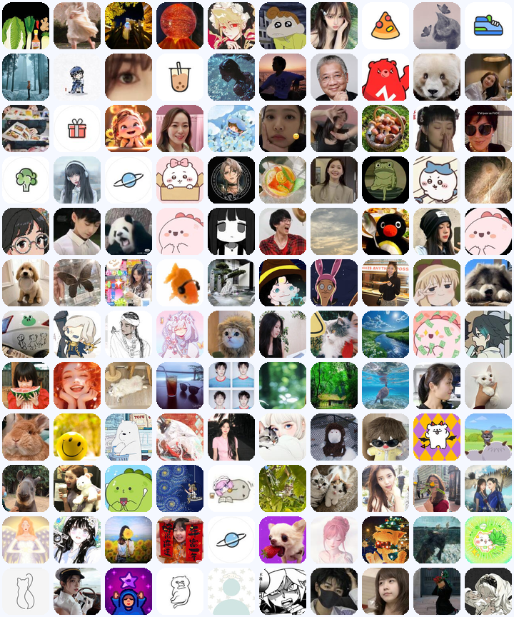

XIAOHONGSHU SINGLE POST AUDIENCE PROFILE
这条评论区里，头像在降压，评论在审判
基于这次抓到的 6,839 条评论和 6,490 个用户样本，这不是一群靠职业感头像建立权威的人，
而是一群先用头像把自己“藏轻一点”，再在评论里迅速识别“谁在装懂、谁真的经历过”的用户。
他们的讨论核心不是泛泛道理，而是 专家真假、婚姻代价、亲子责任、控制与尊重。
头像偏动漫 / 萌宠 / 轻自拍
评论偏反讽识别
婚姻朋友投射明显
亲子归因强
高赞极度集中
3,819 / 3,020
一级评论 / 回复，讨论不是单向路过
头像样本拼图

这里取的是当前评论区里高互动用户的 Top 120 头像样本。不是全量 6,490 人逐一分类，
但足够看出这条内容吸来的自我呈现风格。
头像呈现偏好
这组占比是基于样本拼图的人工观察值，目的是看风格，不是做严格视觉识别统计。
头像画像结论
先把社交压力降下来
很多人不用正式真人头像，而用动漫、宠物或轻滤镜自拍，说明这不是强身份背书型评论场。
愿意表达，但不愿太重
头像整体呈现“可爱化、趣味化、低攻击性”，和评论里的锋利判断形成明显反差。
不是专家社群，更像大众观察者
几乎看不到统一职业头像或机构形象，更多是普通用户在用自己的日常方式参与公共判断。
地区与时段线索
活跃时段
12:00
午间评论峰值 580 条，其次是 08:00-13:00 的白天时段；21:00 与 23:00 也有次高峰。
主要地区
广东 1,387 / 浙江 506 / 江苏 464 / 上海 411 / 四川 374 / 北京 314
一句话评论画像
这批用户可以概括为 “轻头像、重判断”的现实议题评论人群。
他们不是在围绕抽象价值空谈，而是在评论里迅速识别谁更可信、谁在把个人婚姻经验投射给别人、
谁把亲子问题归责给父母，以及“控制”与“尊重”究竟该怎么划线。
评论画像五型
最高赞核心
专家识别型
不是在学知识，而是在判断“谁是真专家、谁是假共情”。最容易跑出来的句式就是“真专家”“患者到场”“一眼看出来”。
关系投射
婚姻投射型
用户会迅速把内容带回婚姻、朋友关系和人生选择，尤其敏感“自己过得苦，就想把别人也拉下水”这种解释框架。
家庭归因
亲子归因型
“孩子问题其实是父母问题”这类判断触发度很高，说明评论者会主动把外部观点套进家庭结构和教育责任。
创伤警觉
控制创伤型
少量但很尖锐的评论会落到“控制欲、尊重、安全感、远离”这些词，说明有人在把讨论映射到自己的成长经验。
少量转化口
求助入口型
虽然占比不大，但会直接问怎么去、看什么、课程和书单，这批人是评论区最接近“下一步行动”的部分。
主流底色
围观补刀型
仍有大量评论只是观察、补刀和加一句社会判断。它们未必长，但非常会帮助某个观点迅速形成场域共识。
高赞评论切片
“真正的患者到场了[doge][流汗R]”
133,396 赞。最典型的不是说理，而是用一句反讽完成场上站队。
“我感觉她是自己进入婚姻了，发现婚姻中的琐碎实在折磨人，所以想把‘朋友’拉下水。”
49,523 赞。说明用户很习惯用关系投射去解释别人的表达动机。
“听懂了，他的理念就是：亲子关系不好都是父母的问题。”
11,335 赞。亲子责任的归因非常容易在评论区形成共识。
“我觉得你很难让你的孩子爱上马桶的。”
7,528 赞。辛辣、具象、带生活画面的句子更容易出圈。
评论本质判断
先判立场，再谈观点
这条评论区最先被放大的不是方法论，而是“你到底站在哪边”“你有没有真的经历过”。
一句话比长解释更容易出爆点
最高赞评论几乎都在 15 字以内，说明这里更吃犀利判断，不吃完整论证。
评论者愿意把公共话题带回私人生活
只要触及婚姻、孩子、控制、尊重，用户就会快速把它映射到自己的真实关系经验上。
主题信号强度
上面是按关键词信号聚合的主题热度，不是互斥分类，作用是看这条评论区最常被点燃的讨论方向。
互动结构
点赞分布
42.97
平均点赞数。中位数为 0，说明大多数评论只是普通表达，少数爆点句把整体拉高。
高赞评论
68 / 22
100 赞以上 / 1,000 赞以上评论数。真正形成舆论标杆的，只有很小一部分。
文本密度
21.63
平均评论字数；中位数 15。说明这里不是长文辩论区，更像高频短句判断场。
高频触发词
专家 798
孩子 555
结婚 378
父母 316
朋友 236
患者 87
为什么 70
现在 86
内容启发
适合做“立场识别型”标题
这条内容不是靠完整知识获胜，而是靠“谁说得更像真经历过的人”来放大传播。
用关系投射做二次内容更容易带讨论
婚姻、朋友、亲子责任是最自然的延伸场景，用户已经在评论里替你把桥搭好了。
如果要承接转化，先给入口再给理论
想看课程、书籍、线下和“怎么做”的用户不多，但他们是最明确的下一步行动人群。